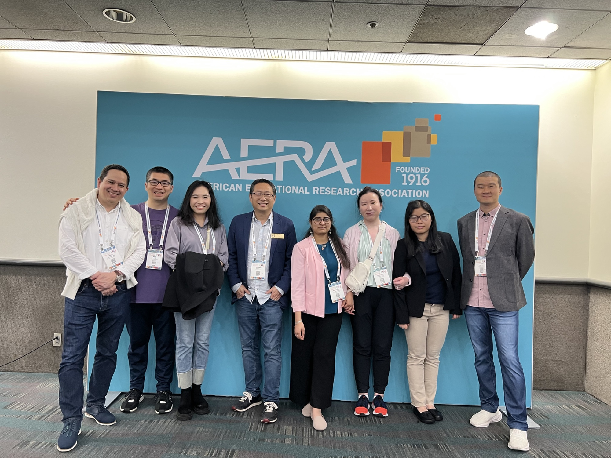
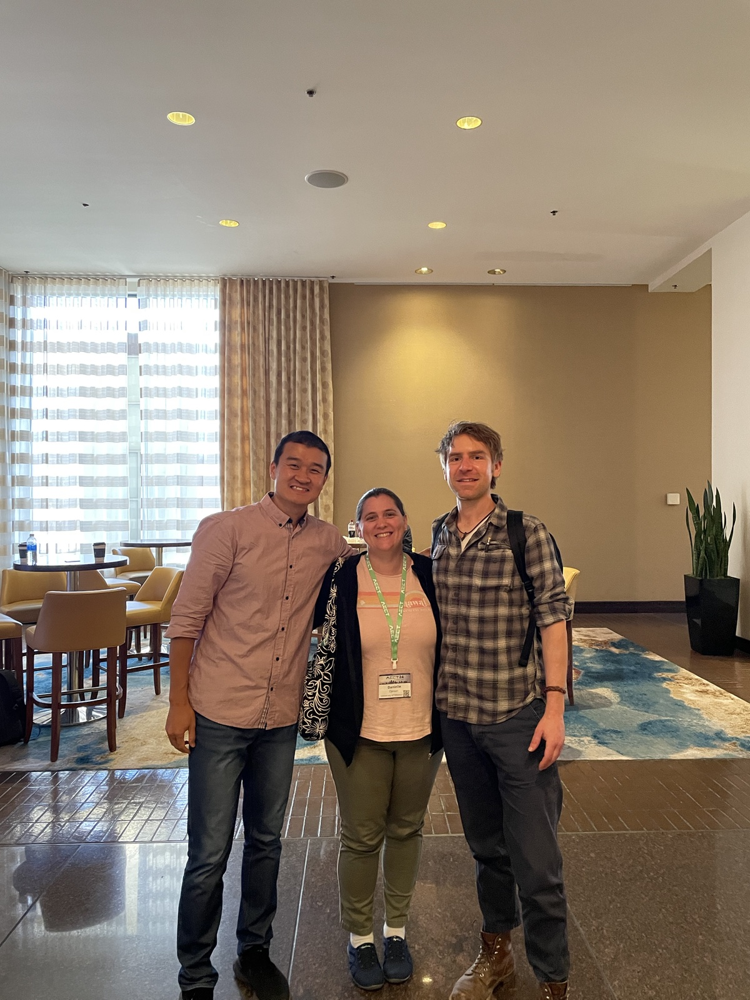
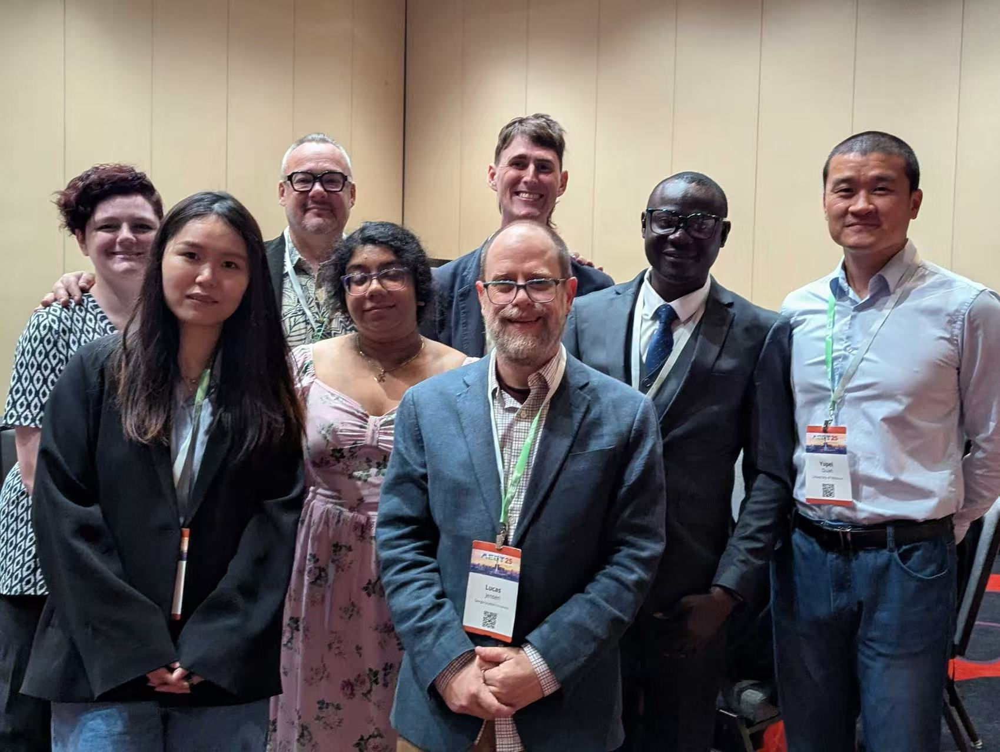
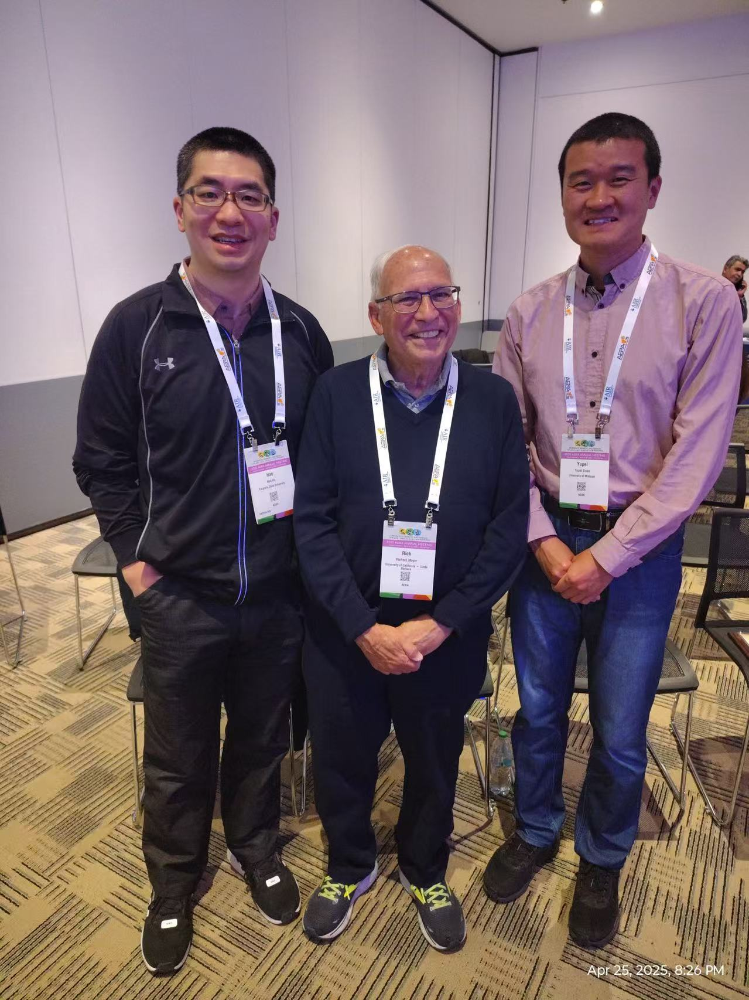
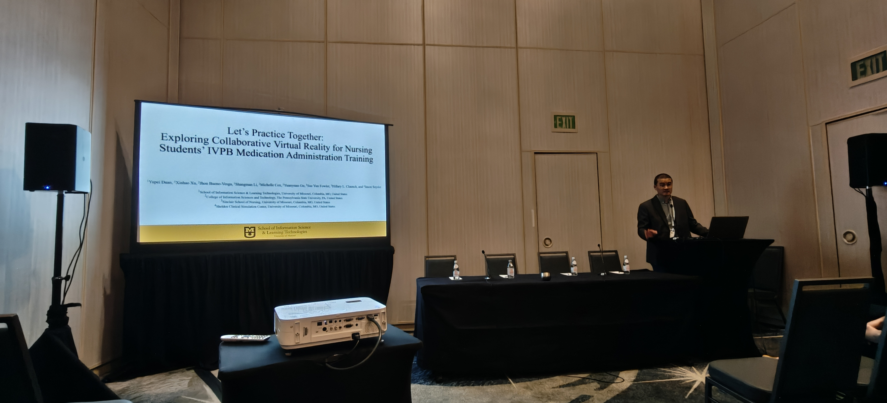
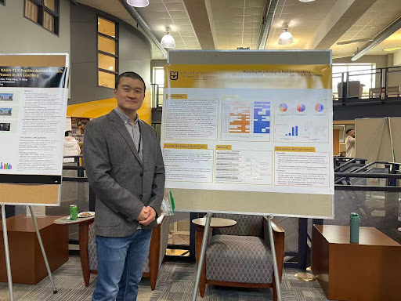

2026
The Role of Cognitive Load and Engagement in Students’ Adoption of an AI-Supported VR Training System
Bueno-Vesga, J. A., Xu, X., Gu, Y., He, H., Li, S., & Duan, Y.
IEEE Transactions on Visualization and Computer Graphics, 32(5), 4617–4625
Scholarship
This page provides the formal record of my published, accepted, and under-review work. Project context, methods, and research roles are described on the Research page.
Peer-reviewed publications
Each record links to its DOI or publisher-hosted source.
2026
Bueno-Vesga, J. A., Xu, X., Gu, Y., He, H., Li, S., & Duan, Y.
IEEE Transactions on Visualization and Computer Graphics, 32(5), 4617–4625
2026
He, H., Xu, X., Li, S., Bueno-Vesga, J. A., Duan, Y., & Gu, Y.
International Journal of Educational Technology in Higher Education, 23, Article 12
2026
Duan, Y., Xu, X., He, H., Gu, Y., Li, S., & Bueno-Vesga, J.
IEEE International Conference on Artificial Intelligence and Extended and Virtual Reality, 98–107 · Best Paper Nominee
2025
Duan, Y., Xu, X., Wang, F., Shyu, C.-R., Islam, S. K., et al.
IEEE International Conference on Advanced Learning Technologies, 308–312
2025
Duan, Y., Xu, X., He, H., Li, S., & Gu, Y.
Journal of Interactive Learning Research, 36(1), 83–100
Earlier instructional scholarship
These publications document the biology and science teaching, curriculum design, modeling, experimentation, and online learning questions that preceded my current research program.
2015
Duan, Y., & Chen, Y.
Bulletin of Biology, 50(10), 33–35
2015
Duan, Y.
Basic Education Curriculum, 2015(2), 62–64
2013
Duan, Y., Wang, Y., Li, J., & Gong, Y.
Beijing Education, 2013(4), 42–44
2010
Chen, Y., Lei, M., & Duan, Y.
Bulletin of Biology, 45(4), 42–45
2009
Duan, Y.
Bulletin of Biology, 44(4), 42–44
English titles are descriptive translations of the original Chinese titles. PDF downloads provide the original published articles.
Current pipeline
Titles and venues are shown without unpublished findings or confidential review information.
Journal manuscript
Journal manuscript
Book chapter
Accepted for 2026
Forthcoming conference presentations connected to questioning, design thinking, learner agency, and reflection.
Association for Library and Information Science Education 2026 Annual Conference
Association for Educational Communications and Technology 2026 International Convention
Association for Library and Information Science Education 2026 Annual Conference
Selected materials
Public copies of selected articles, proceedings papers, posters, and presentation slides.
Scholarship in practice
Conference participation connects published work with the people and conversations that move research forward.





